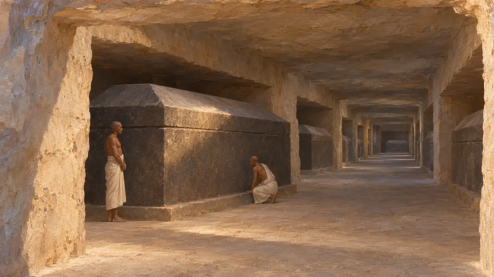
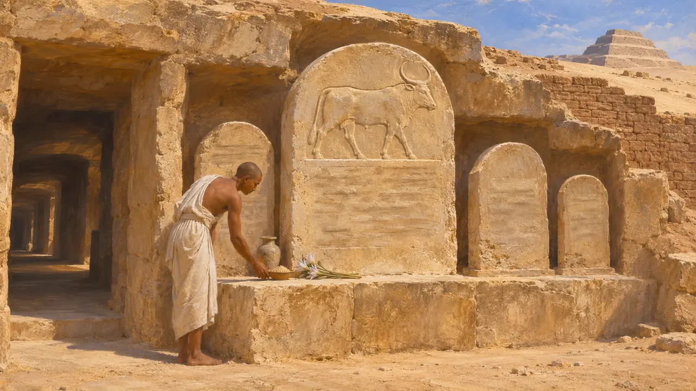
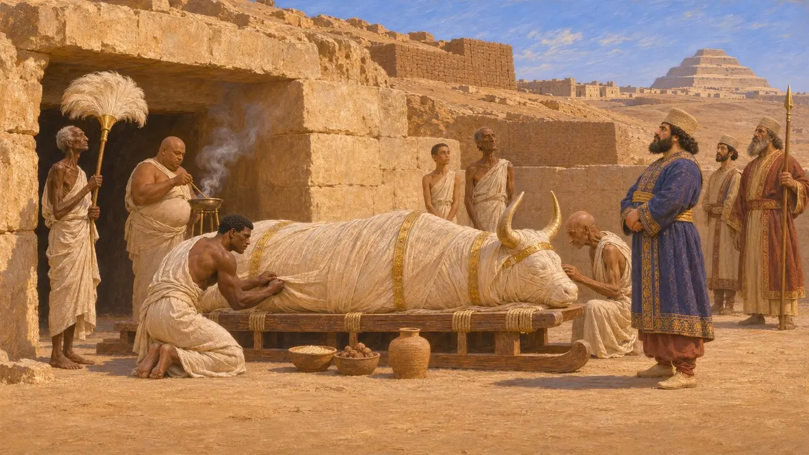
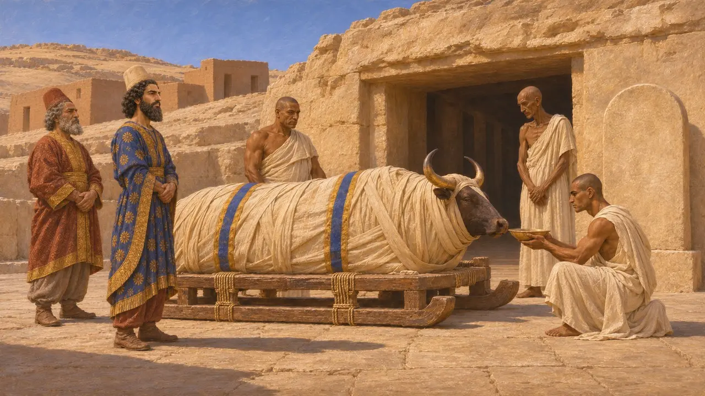
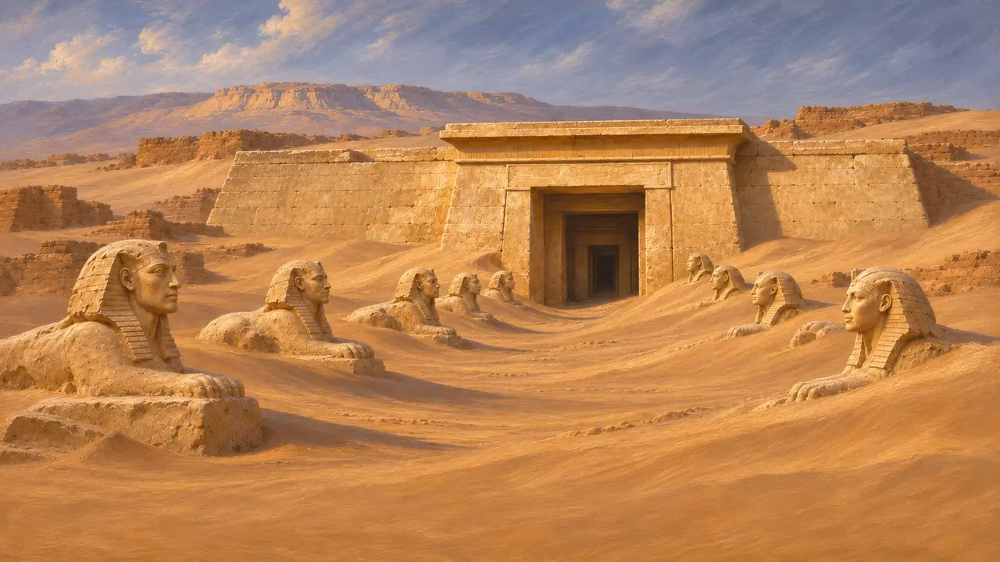

멤피스 서쪽 사막 가장자리에 자리한 사카라는 멤피스의 왕들과 귀족들의 네크로폴리스였다. 훗날 세라페움이라 불린 구역에서는 신 프타의 살아 있는 현현인 아피스 황소들이 지하 회랑에 묻혔다. 이 매장에서 나온 석비는 각 황소를 재위 연도로 기록하며, 이집트식 연대 계산에 페르시아 왕들도 포함하고 있다.
게임에서: 이 게임은 사카라를 연대기 항목과, 아피스의 죽음 같은 백과사전의 사건 항목에서만 언급합니다. 사카라는 레벨도, 플레이어가 건설하는 장소도 아니며 고유한 메커니즘도 없습니다.

아피스 회랑
당대 기록1850년대 초 오귀스트 마리에트가 시작한 사카라 발굴에서는 바위를 깎아 만든 긴 회랑이 드러났는데, 그곳에는 거대한 석관에 아피스 황소들이 안치되어 있었다. 그 위와 주변에는 예배당과 석비가 서 있었다. 회랑은 수 세기에 걸쳐 확장되었으며, 그 안에는 페르시아 시대의 매장도 섞여 있다.
A. Mariette, Le Sérapéum de Memphis

황소상의 연대를 알려 주는 비석
당대 기록봉헌 석비에는 특정한 황소들의 탄생과 즉위, 죽음이 재위 연도에 따른 날짜와 함께 기록되어 있다. 황소의 매장은 캄비세스와 다리우스의 치세에 걸쳐 나타난다. 이 석비들은 페르시아 왕들 아래에서 쓰인 이집트의 문서이며, 왕들에게 이집트 파라오의 통상적인 칭호를 붙인다.
M. Malinine, G. Posener and J. Vercoutter, Catalogue des stèles du Sérapéum de Memphis, 1968

캄비세스와 아피스
분쟁 중헤로도토스에 따르면 캄비세스는 광기에 사로잡혀 새로 발견된 아피스의 넓적다리를 칼로 찔렀고, 그 황소는 죽었다. 그러나 사카라의 증거는 이를 뒷받침하지 않는다. 캄비세스 치세에 매장된 황소는 합당한 의례를 받았고, 그 제의를 모욕했음을 보여 주는 석비도 없다. 대부분의 역사가는 헤로도토스의 이야기를 캄비세스에 대한 적대적인 이집트 전승으로 본다. 다만 이 문제는 지금도 논쟁 중이며, 특히 연대가 어느 황소와 들어맞는지를 두고 의견이 갈린다.
Herodotus 3.27-29

다리우스와 제의
당대 기록다리우스 치세의 석비에는 아피스 장례가 기록되어 있는데, 이는 페르시아 지배 아래에서도 그 숭배가 이어졌음을 보여 준다. 이는 다리우스가 사이스의 생명의 집 사업 등으로 이집트의 신전과 법을 후원했다는 다른 증거와도 들어맞는다. 이 기록들 속에서 페르시아 왕들은 파라오들이 하던 대로 황소의 의례를 이어 갔다.
Catalogue des stèles du Sérapéum de Memphis, 1968

이름과 이후의 역사
고대의 전승세라페움이라는 이름은 오시리스-아피스 숭배가 신 세라피스와 결합된 후대 그리스어권 세계의 것이다. 스트라본은 멤피스에 모래에 반쯤 묻힌 세라페움이 있다고 서술한다. 그의 서술은 그 자신의 시대에 관한 것이며, 페르시아 시대의 것이 아니다.
Strabo 17.1.32
출처
- Herodotus 3.27-29
- A. Mariette, Le Sérapéum de Memphis
- M. Malinine, G. Posener and J. Vercoutter, Catalogue des stèles du Sérapéum de Memphis, 1968
- Strabo 17.1.32
- P. Briant, From Cyrus to Alexander, 2002